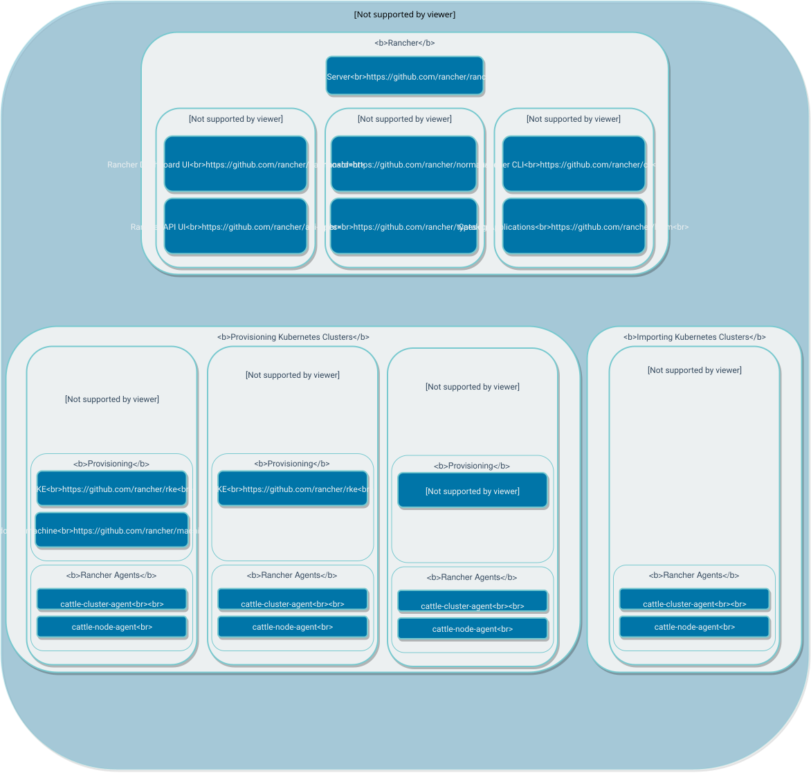

|
本文档采用自动化机器翻译技术翻译。 尽管我们力求提供准确的译文，但不对翻译内容的完整性、准确性或可靠性作出任何保证。 若出现任何内容不一致情况，请以原始 英文 版本为准，且原始英文版本为权威文本。 |
为SUSE Rancher Prime做出贡献
了解用于Rancher和Rancher文档的储存库，如何构建Rancher储存库，以及在提交问题时需要包含哪些信息。
有关如何为Rancher项目的开发做出贡献的详细信息，请参阅 Rancher开发者维基。维基包含许多主题的资源，包括以下内容：
-
如何设置Rancher开发环境并运行测试
-
问题在开发生命周期中的典型流程
-
编码指南和开发最佳实践
-
调试和故障排除
-
开发Rancher API
在Rancher用户Slack中，开发者的频道是*#developer*。
Rancher文档
有关为Rancher v2.x文档储存库做出贡献和构建的更多详细信息，请参见 Rancher文档README。
有关描述Rancher v1.6及更早版本的文档，请参见 Rancher 1.x文档储存库，其中包含 https://rancher.com/docs/rancher/v1.6/en/.的源文件。
Rancher储存库
所有储存库都位于我们的主要GitHub组织内。有许多用于Rancher的储存库，但我们将提供一些主要用于Rancher的储存库的描述。
| 储存库 | URL | 说明 |
|---|---|---|
Rancher |
该储存库是Rancher 2.x的主要源代码。 |
|
类型 |
该储存库包含所有 Rancher 2.x 的 API 类型。 |
|
API 框架 |
该储存库是一个 API 框架，用于构建基于 Kubernetes 自定义资源的 Rancher 风格 API。 |
|
用户界面 |
该储存库是仪表板 UI 的源代码。 |
|
（Rancher）Docker Machine |
该储存库是使用节点驱动程序时所用 Docker Machine 二进制文件的源代码。这是`docker/machine`储存库的一个 fork. |
|
machine-package |
该储存库用于构建 Rancher Docker Machine 二进制文件。 |
|
kontainer-engine |
该储存库是 kontainer-engine 的源代码，这是一个用于配置托管 Kubernetes 集群的工具。 |
|
CLI |
该储存库是 Rancher 2.x 中使用的 Rancher CLI 的源代码。 |
|
（Rancher）Helm 储存库 |
该储存库是打包的 Helm 二进制文件的源代码。这是`helm/helm`储存库的一个 fork. |
|
loglevel 储存库 |
该储存库是 loglevel 二进制文件的源代码，用于动态更改日志级别。 |
要查看 Rancher 中使用的所有库/项目，请在 rancher/rancher 储存库中查看 go.mod 文件。

构建 Rancher 储存库
每个储存库都应该有一个 Makefile，并可以使用 make 命令构建。make 目标基于储存库中 /scripts 目录中的脚本，每个目标将使用 Dapper 在隔离环境中运行。此过程将使用 Dockerfile.dapper，并包括所有必要的构建工具。
默认目标是 ci，将运行 ./scripts/validate、./scripts/build、./scripts/test 和 ./scripts/package。构建的结果二进制文件将位于 ./build/bin 中，通常也会打包在 Docker 镜像中。
Rancher 错误、问题或疑问
如果您发现任何错误或遇到任何问题，请搜索 报告的问题，因为可能有人遇到过相同的问题，或者我们正在积极寻找解决方案。
如果您找不到与您的问题相关的内容，请通过 提交问题 联系我们。尽管我们有许多与 Rancher 相关的储存库，但我们希望在 Rancher 储存库中提交错误，以免错过它们！如果您想问一个问题或询问其他用户关于用例的情况，我们建议在 Rancher 论坛 上创建一个帖子。
提交问题的检查清单
请在提交问题时遵循此检查清单，这将帮助我们调查和修复问题。更多信息意味着我们可以使用更多数据来确定问题的原因或可能与问题相关的内容。
|
对于大量数据，请使用 GitHub Gist 或类似工具，并在问题中链接创建的资源。 |
|
重要说明：
请删除任何敏感数据，因为它将公开可见。 |
-
*资源：*尽可能提供使用资源的详细信息。由于问题的来源可能有很多，提供尽可能多的细节有助于确定根本原因。请参见以下一些示例：
-
*主机:*主机具有什么规格，如 CPU/内存/磁盘，发生在哪个云上，您使用的是什么 Amazon 机器镜像，您使用的是什么 DigitalOcean Droplet，您正在配置什么镜像，以便我们可以在尝试重现时重建或使用。
-
*操作系统：*您使用的是什么操作系统？提供具体信息会有所帮助，例如
cat /etc/os-release的输出以获取确切的操作系统版本和uname -r以获取确切的内核使用情况 -
*Docker:*您使用的 Docker 版本是什么？您是如何安装它的？Docker 的大部分详细信息可以通过提供
docker version和docker info的输出找到 -
*环境：*您是否在代理环境中？您是否使用了受信任的 CA/自签名证书？您是否使用了外部负载均衡器？
-
*Rancher：*您使用的 Rancher 版本是什么？可以在 UI 的左下角找到，或者从您在主机上运行的镜像标签中获取。
-
*集群:*您创建了什么类型的集群？您是如何创建的？在创建时您指定了什么？
-
-
*重现问题的步骤:*提供尽可能多的细节，说明您是如何进入报告的情况的。这有助于他人重现您所处的情况。
-
提供手动步骤或自动化脚本，以便从新创建的设置到您报告的情况。
-
-
*日志：*提供使用资源的相关数据/日志。
-
Rancher
-
Docker 安装
docker logs \ --timestamps \ $(docker ps | grep -E "rancher/rancher:|rancher/rancher " | awk '{ print $1 }') -
使用
kubectl安装 Kubernetes
确保您配置了正确的 kubeconfig（例如，如果 Rancher 安装在 Kubernetes 集群上，则为
export KUBECONFIG=$PWD/kube_config_cluster.yml），或者通过 UI 使用嵌入的 kubectl。 -
kubectl -n cattle-system \ logs \ -l app=rancher \ --timestamps=true
-
系统日志（这些可能并不全部存在，具体取决于操作系统）
-
/var/log/messages -
/var/log/syslog -
/var/log/kern.log
-
-
Docker 守护程序日志（这些可能并不全部存在，具体取决于操作系统）
-
/var/log/docker.log
-
-
-
*指标:*如果您遇到性能问题，请提供尽可能多的数据（文件或截图），以帮助确定发生了什么。如果您遇到与机器相关的问题，提供
top、free -m、df的输出有助于显示进程/内存/磁盘使用情况。